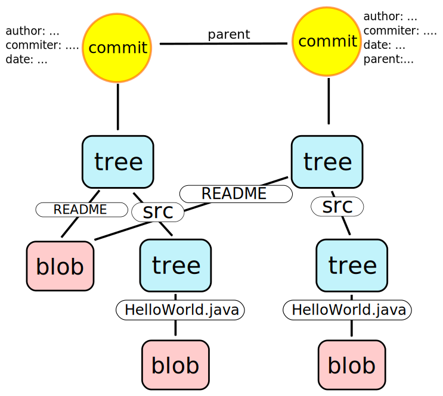
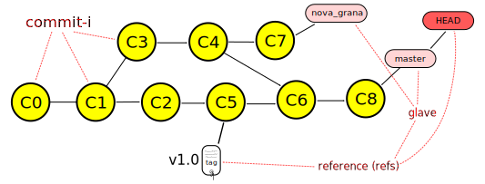

Git DVCS


Fakultet tehničkih nauka u Novom Sadu
Katedra za informatiku
Sadržaj
- Uvod
- Git repozitorijum
- Instalacija i konfiguracija
- Osnovne operacije
- Grane
- Spajanje grana (Merging)
- Razmena promena
- Ispravka grešaka
- Održavanje repozitorijuma
- Modeli grananja
- Preporučena praksa
Uvod
Šta je Git
- Distribuirani sistem za kontrolu verzija (Distributed Version Control System - DVCS).
- Razvoj započeo Linus Torvalds, u aprilu 2005. godine, posle promene politike licenciranja BitKeeper-a koji je do tada korišćen za razvoj linux kernela.
- Dostupan na adresi http://git-scm.com/
Git - osobine
- Izuzetno brz i skalabilan.
- Jednostavan dizajn.
- Odlična podrška za nelinearan razvoj (podrška za veliki broj grana) i velike projekte (npr. Linux kernel).
- Pisan najvećim delom u C-u, ali su delovi pisani u Perl-u, bash-u itd.
- Komande niskog nivoa (plumbing). Komande visokog nivoa (porcelain).
- Ne prati fajlove već sadržaj. Izmene se eksplicitno dodaju pre commit-a.
- Kriptografska autentifikacija istorije promena.
Osnovni workflow
- Ako ne postoji klon repozitorijuma na lokalnom računaru vrši se kloniranje udaljenog repozitorijuma (ovo se generalno radi jednom).
- Menjaju se fajlovi.
- Izmene se dodaju u pripremnu zonu (indeks).
- Vrši se trajno beleženje promene (operacija commit).
Git repozitorijum
Praćenje sadržaja
- Osnova git repozitorijuma je praćenje sadržaja a ne fajlova i promena nad njima. Informacije o promenama se izračunavaju po potrebi.
I’m right. I’m always right, but sometimes I’m more right than other times. And dammit, when I say "files don’t matter", I’m really really Right(tm)1.
Veza radnog stabla, indeksa i repozitorijuma

Životni ciklus fajla u git repozitorijumu

Git repozitorijum
- Jednostavan model repozitorijuma baziran na mapama (parovi ključ-vrednost). Objektna baza.
- Ključevi su SHA1 heš sadržaja koji se čuva + hedera.
- Tri vrste objekata/vrednosti. Sadržaj se komprimuje pomoću zlib biblioteke.
- Reference - pokazivači na određene objekte u repozitorijumu.
- Repozitorijum se nalazi u .git direktorijumu unutar direktorijuma gde je izvršena inicijalizacija sa git init komandom (videti u nastavku).
Vrste git objekata
- Repozitorijum je objektna baza gde postoje tri vrste objekata:
- BLOB: Niz bajtova bez semantike. Najčešće služi za opis sadržaja fajla.
- Stablo(Tree): Čuva niz referenci na blobove i druga podstabla zajedno sa meta-podacima kao što su: naziv fajla, mod i sl.
- Commit: "Pokazivač" na stablo koje opisuje kako je projekat izgledao u trenutku commit-a. Osim toga sadrži niz meta-informacija kao što su autor, vreme nastanka, pokazivače na prethodne commit-e i dr.
- Svi objekti su smešteni na isti način u .git/objects direktorijumu. Prva dva karaktera SHA1 heša čine naziv poddirektorijuma dok preostalih 38 čini ime fajla.
- Na primer:
- .git/obects/bb/82d56602c51c7998911b2d07e84e25a942a028
- Gotovo sve Git operacije se baziraju na manipulaciji sa strukturom koja se sastoji od objekata čiji tip je jedan od navedenih.
BLOB
- Niz bajtova bez semantike i metapodataka. Najčešće služi za opis sadržaja fajla.
- Struktura blob objekta:
blob 107\0
class MainClass {
static void main(int argc, String[] argv) {
System.out.println("Hello World!");
}
}
Tree
- Čuva niz referenci na blobove i druga podstabla zajedno sa meta-podacima kao što su: naziv fajla, mod i sl.
- Rekurzivne reference na druga stabla.
- Struktura tree objekta:
tree 64\0
100644 blob 8e0462460e55357686a844cfd27564ab5a6055a6 README
040000 tree 1d6a41c11d3557faae7522bc2af7042e8723e63a src
Commit
- Niz bajtova bez semantike i metapodataka. Najčešće služi za opis sadržaja fajla.
- Struktura commit objekta:
- Struktura commit objekta:
commit 195\0
tree c7984074ae6aae0bb8b087ca0a5bd6026b108528
author Igor Dejanovic <igor.dejanovic@gmail.com> 1350920069 +0200
committer Igor Dejanovic <igor.dejanovic@gmail.com> 1350920069 +0200
Prvi commit.
Prvi commit

Drugi commit
Reference
- Pokazivači na objekte u git repozitorijumu (najčešće commit-e).
- Smeštene u .git/refs direktorijumu.
- Dele se na:
- glave (heads) koje predstavljaju pokazivač na poslednji commit sa grane.
- oznake (tags) koji predstavljaju obeleživač/marker commit-a koji je, na neki način, poseban. Na primer, možemo označiti određenu verziju projekta. k
- Specijalna referenca HEAD pokazuje na glavu koja je tekuća čime označava granu na kojoj se radna kopija trenutno nalazi. Smeštena je u .git/HEAD fajlu.
- Navode se prema putanji u refs folderu (npr. refs/heads/master).
Git repozitorijum sa objektima i referencama
Prikaz popularnih hosting rešenja - GitHub i GitLab
Instalacija i konfiguracija
Vrste klijenata
- GUI
- FLOSS: EGit (Eclipse plugin), git-cola, TortoiseGit, Git Extensions...
- Komercijalni: SmartGit
- Command line - kanonički git klijent
Pomoć - help
Spisak osnovnih komandi git-a se može dobiti sa:
$ git help
usage: git [–version] ...
...
The most commonly used git commands are:
add Add file contents to the index
bisect Find by binary search the change that introduced a bug
branch List, create, or delete branches
checkout Checkout a branch or paths to the working tree
...
$ git help <ime komande>
Konfiguracija
- Konfiguracija se čuva u tekstualnim fajlovima koji imaju strukturu .ini fajlova.
- Preporučivo je parametre podešavati putem git config komande.
- Tri nivoa konfiguracije:
- sistemska (za sve korisnike instalacije) Fajl /etc/gitconfig
- po korisniku (važi za ulogovanog korisnika) Fajl ~/.gitconfig (POSIX) ili C:\Documents and Settings\$USER\.gitconfig (Windows)
- po repozitorijumu (važi za tekući repozitorijum) Fajl .git/config unutar repozitorijuma
Osnovna konfiguracija
Konfigurisanje imena i email-a:
$ git config --global user.name "Igor Dejanović"
$ git config --global user.email "igor DOT dejanovic AT gmail DOT com"
$ git config --list
# Windows - Obratiti pažnju na duple navodnike!!!
$ git config --global core.editor
"'C:/Program Files/Windows NT/Accessories/wordpad.exe'"
Konfiguracija za SSL i proxy
Za pristup serverima sa nevalidnim sertifikatom (npr. samopotpisan sertifikat) potrebno je podesiti sledeće za sertifikat koji smo preuzeli sa servera:
$ git config --global http.sslCAInfo /home/igor/Dropbox/config/all-certs.crt
$ git config --global http.sslVerify false
$ git config --global http.proxy 192.168.77.100:8080
Povezivanje sa serverom upotrebom SSH ključeva
- Ključevi se nalaze u ~/.ssh/ direktorijumu.
- Generišu se sa komandom:
$ ssh-keygen -t rsa -b 4096 -C "your_email@example.com"
Generating public/private rsa key pair.
Enter file in which to save the key (/Users/you/.ssh/id_rsa): [Press enter]
Enter passphrase (empty for no passphrase): [Type a passphrase]
Enter same passphrase again: [Type passphrase again]
Your identification has been saved in /Users/you/.ssh/id_rsa.
Your public key has been saved in /Users/you/.ssh/id_rsa.pub.
The key fingerprint is:
01:0f:f4:3b:ca:85:d6:17:a1:7d:f0:68:9d:f0:a2:db your_email@example.com
Konfigurisanje diff/merge alata
$ git config --global merge.tool meld
$ git config --global merge.tool "'C:\ Program Files\...'"
Konfiguracija veličine slova u nazivima fajlova
Unix fajl sistemi su uglavnom case-sensitive dok kod windows-a to nije slučaj. Stoga je na unix file sistemima sasvim legalno da postoje dva fajla istog naziva ali različite veličine slova (na primerFile1.txt i file1.txt). Ovo na windows-u nije moguće pa je dobro,
ukoliko članovi tima rade na različitim operativnim sistemima,
podesiti sledeće:
$ git config --global core.ignorecase true
Konfiguracija završetaka linija (line endings)
Unix na kraju reda kod tekstualnih fajlova koristi LF bajt. Windows koristi dva bajta - CR i LF. Današnji editori su u stanju da rade sa oba standarda. Git podržava automatsku konverziju krajeva linija. Tekuća praksa je da se kreira konfiguracioni fajl .gitattributes u korenskom folderu u kome se "pomaže" git-u da pravilno odredi tekstualne i binarne fajlove. Ovaj fajl se commit-uje u repozitorijum tako da svi članovi tima imaju isto podešavanje. Sadržaj.gitattributes fajla:
* text=auto
*.png binary
*.jpg binary
*.exe binary
Napomena:
Za dodatnu konfiguraciju pogledati konfiguracione parametre core.eol, core.autocrlf i core.safecrlf.
Normalizacija krajeva linija u repozitorijumu
Ako se u git repozitorijumu već nalaze fajlovi sa CRLF tada je potrebno izvršiti normalizaciju svih tekstualnih fajlova na LF pratite uputstvo sa GitHub-a.Osnovne operacije
Inicijalizacija repozitorijuma
- Repozitorijum je skup metapodataka koji se nalaze u skrivenom folderu .git unutar korenskog foldera projekta.
- Kreiranje se obavlja na sledeći način:
# Prelazak u folder gde se nalazi izvorni kod
# projekta
$ cd ~/Projekat
# Inicijalizacija
$ git init
Initialized empty Git repository in
/home/igor/Projekat/.git/